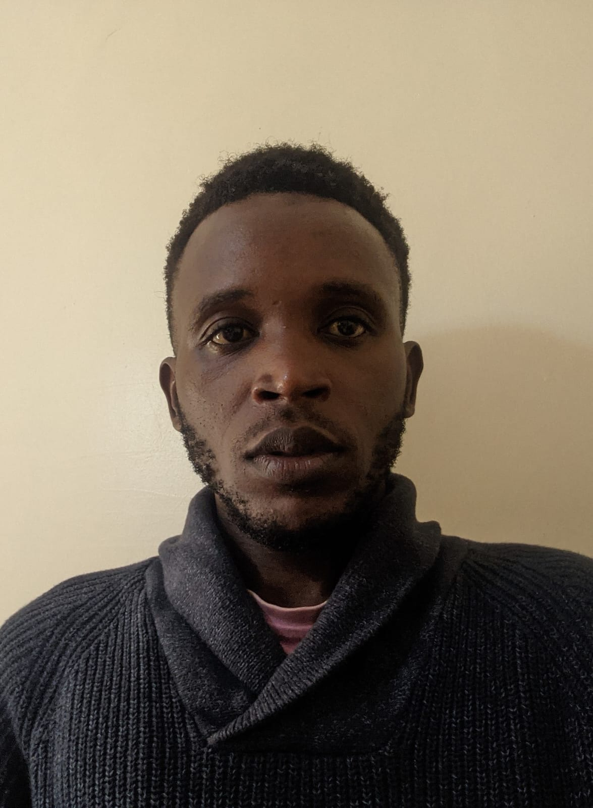

David Okoth

Summary
I am an experienced professional with a background in Mechatronics Engineering.
Education
- BSc in Mechatronics Engineering Dedan Kimathi University of Technology, 2021.
Proffesional Expereince
Technical Sales Engineer | Hyundai Elevators-Nairobi, Kenya | 2023-Present
Responsibilities:
- Developed and maintained strong client relationship, ensuring a high level of customer satisfaction.
- Collaborated with clients to understand their elevators needs and recommended suitable solutions.
- Conducted real-time reporting to keep clients informed about project progress and maintenance updates.
Installer | Escler Elevators Subcontractors-Nairobi, Kenya | August 2021-2023.
Responsibilities:
- Aided in mechanical and electrical installation of the elevators part into the shaft.
- Determined causes of component failure and performed necessary maintenance.
Intern | Moi International Airport | January - April 2019.
Responsibilities:
- Assisted in the installation, maintenance, and repair of mechatronics systems.
- Collaborated with senior technicians to troubleshoot and resolve technical issues.
Skills
- Proficient in control systems design and implementation.
- Strong understanding of electromechanical systems and maintenance practices.
- Excellent problem-solving and troubleshooting abilities.
- Effective communication and interpersonal skills.
- Ability to work collaboratively in cross-functional teams.
- Strong analytical skills with attention to detail.
Project
3 Axis-CNC 3D Printer Project | January to April-2021;
- Collaborated in the development of a 3D printer incorporated with drilling system for dentistry applications such as fabrications of dental crowns, implants among others, demonstrating strong problem-solving skills.
- Presented findings and solutions to a panel of faculty members.
Other